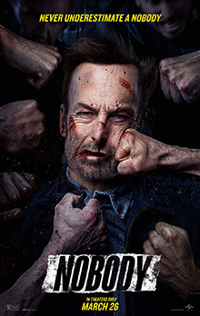
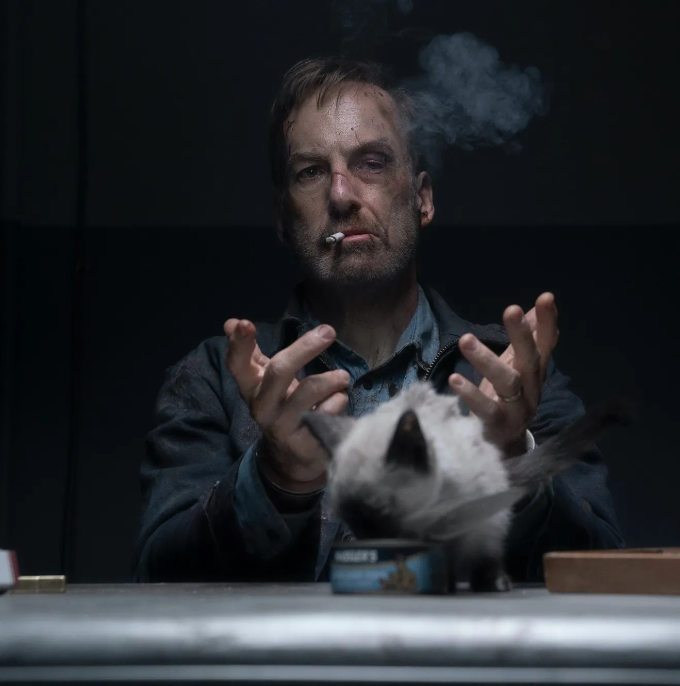

Senki (Nobody, 2021)
A Senki egy amerikai akciófilm, amelyet Ilya Naishuller rendezett. A főszerepben Bob Odenkirk látható, aki egy látszólag átlagos családapát alakít, akinek múltja sötét titkokat rejt.


Miután betörnek otthonába, Hutch Mansell múltja újra felszínre kerül, és vérbe borítja a várost, miközben leszámol azokkal, akik bántani próbálták a családját.
A film gyors tempójú, tele van látványos harcjelenetekkel és fekete humorral. A nézők szerint a film kellemes meglepetés volt a műfaj rajongói számára.